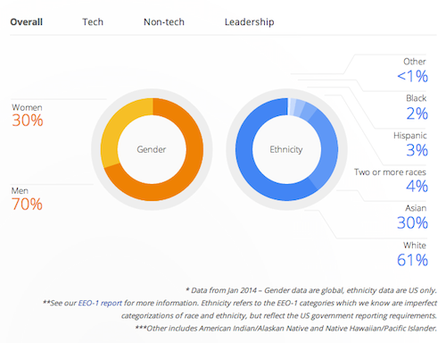

As a black woman, I often do not articulate the feelings of discouragement, detachment, isolation, and self doubt experienced as a result of being an anomaly in the tech industry. I tend to keep this to myself. After spending a career of 4+ years at giant Silicon Valley tech companies, where workplace diversity is practically non-existent, I believe it is the appropriate time to speak out about the dangers and the reality of stereotype threat.
Minority Report

Google workforce demographics (source)
Carefully examine this chart.
For every 100 Googlers, 30 are women. 2 are black.
Doesn't sound too promising for someone like me. Google made a bold move by publishing their diversity numbers, but seeing the factual evidence of what I have already experienced to be true introduced a new wave of the unwelcome stereotype threat.
Stereotype threat refers to being at risk of confirming, as self-characteristic, a negative stereotype about one's group. (source)
Diversity data from technology companies puts people, particularly minorities, at risk of confirming negative stereotypes about themselves. Are no black people at Google because blacks do not belong there? Are men, in fact, superior to women when it comes to making a successful career in technology? While these questions may sound absurd, I admit they are questions I have asked myself. Am I really supposed to be here? The numbers say I shouldn't. And numbers don't lie.
Culture Shock
I almost gave up on a career in technology. Fresh out of college, I was eager to take on Silicon Valley with the smarts and energy I had to thrive as a programmer. But quick glances around the office soon turned eagerness into despair, as I received a daily reminder that nobody looked like me. I cannot fully express what this feels like, but suffice it to say that this reality compounded thoughts of doubt and criticism in an industry already saturated with self-declared impostors.
Eventually, those negative thoughts prevailed and the stereotype threat was no longer a threat — it was the reality to which I had succumbed. I began to shy away from a world in which I felt I did not belong, trading programming for more appropriate roles, like developer relations and quality assurance. Leave the programmers to the brogrammers; I was throwing in the towel.
A Dose of Perspective
With an exit strategy mapped out, I was ready to discover where I could fit into the world of technology without having to deal with the culture shock. But part of me realized I was giving up on something I knew I could master. I was forfeiting the chance to build, the opportunity to solve problems for the people who do look like me and even the ones who don't. I was abandoning programming, not because it was too challenging or lack of passion — instead, I was playing victim to the stereotype threat that there was no place for someone like me. My race and gender made me feel inadequate in the tech arena, and I was using these feelings to perpetuate the message that I was simply not good enough.
Then it hit me...I was talking to myself.
I was the one preaching about my inadequacies. I was the poor victim believing these conjectures to be true. It was me who chose to believe that because I am a black female, I should find a place more accepting, more inviting, more comfortable than the world of brogrammers. Why was I the one feeding myself these lies?
When one’s stereotyped group status is made relevant or conspicuous by situational features, stereotype threat and performance decrements are more likely. (source)
I had consumed my environment as unwelcoming because I was most concerned about the relevance of my racial identity when I should have been focused on learning and growth. I should have soaked up the knowledge of my peers, regardless of their race or gender and how either compared to mine. I should have looked at those Google diversity numbers and thought, "Hello, opportunity." Hindsight is 20/20, but I slowly began to understand that I had fallen prey to a stereotype threat that was more imagined than real. And I was the only one holding me back.
Comeback Kid
Two months ago, I made the decision to jump back in the programming ring. I am learning web development for 9 weeks at Dev Bootcamp in San Francisco, CA. It will provide the leverage for me to hit the ground running with programming once again, with the same energy and vigor that I had after college. It was also give me the opportunity to teach and mentor young black women who may find themselves asking, "Is this really for me?" when another tech company releases diversity data.
If you enjoy programming, yes it is for you. Don't accept stereotypes, and scoff at the data. I proudly wear the badge of the next black female programmer.
Hello, opportunity.
Pair Programming
Posted Sunday June 15th, 2014
During Phase 0 of Dev Bootcamp, we hit the ground running with pair programming as a guide for our learning.
What is pair programming?
Pair programming is an agile software development technique in which two programmers work together at one workstation. One, the driver, writes code while the other, the observer, pointer or navigator, reviews each line of code as it is typed in. The two programmers switch roles frequently. (source)
By learning to harness solid communication skills, patience, and a beginner's mind, pair programming is not only an effective tool for solving software challenges but also for getting a leg up in life.
Communication
This is essential to pair programming effectively. Being able to communicate ideas clearly and concisely is not only important in code, but also when working directly with others. Often, especially as navigator during a pairing session, communication – not code – is the most important tool leveraged during the pairing session. It is the 80% of the Pareto principle and should be continually practiced to make pairing sessions both fun and productive.
Patience
Programming in pairs has admittedly taught me a great deal about patience. It is a sheer exercise in patience to resist the urge to jump in and code an initial solution without first communicating with my partner. Slowing down and taking sufficient time to discuss the ideas bouncing around in my head until they make coherent sense to someone else takes practice and a great deal of patience.
Beginner's Mind
When pairing, it is often useful to approach sessions with something called Shoshin, or beginner's mind, a term that comes from Zen Buddhism.
[Shoshin] refers to having an attitude of openness, eagerness, and lack of preconceptions when studying a subject, even when studying at an advanced level, just as a beginner in that subject would. (source)
Why is this important when pairing? Basically, it helps eliminate ego-driven communication. There is always something to learn from a partner when programming together, regardless of technical skill level. Understanding this and approaching each session with a beginner's mindset allows me to accept and welcome all elements of learning, including lessons in patience and communication as mentioned previously.
Conclusion
Though I was initially hesitant about this method of programming due to the fact that I am the quintessential introvert who prefers working alone, I have learned quite a bit about how to effectively pair program. I have found that practicing the technique has fostered interesting insights about myself and my learning style. There are several more pairing opportunities before the conclusion of Dev Bootcamp, and I am excited to discover how I will continue to learn and develop as a result.
The Tech Treadmill
Posted Sunday June 8th, 2014
Tech moves fast. Extremely fast.
It can often be a struggle to catch up. This struggle is compounded by a term I've heard referred to as Magpie Syndrome, or the liking of shiny new things. Simply put, people always tend to seek out the new hotness. As is the case with other rapidly-growing industries, the new hotness in tech seems to get newer and hotter everyday.
There are new languages, frameworks, development tools, platforms, etc. being created all the time. This can make the tech industry feel like a treadmill without a stop button. As a new programmer, it can be confusing deciding which technologies to learn...especially when those technologies run the risk of being phased out in a matter of years. This is a problem because it can potentially turn great minds away from tech, for fear that knowledge gained may soon be obsolete. For many budding developers, there is a looming feeling of not being able to "keep up" with the industry and the skills the market demands.
So how do we quell this? The short answer is...we can't. But there are perhaps some ways to mitigate this and encourage those new to technology to see beyond the treadmill. We can start by leading with the right questions:
What language should I learn? What concepts should I understand?
Should I learn back-end or front-end web development? How do current technologies shape the web from a high level perspective?
Et cetera. Core programming concepts, algorithms, and several focus areas are fairly language-agnostic, and hold fast during the constantly changing wave of new tech. There will always be the hot programming language of the week, but if we can encourage the folks joining tech to focus on underlying concepts and high level knowledge, there might be a little less overwhelm from the constant speed of the tech treadmill.
Gregorc Thinking Style
Posted Monday June 2nd, 2014
"Gregorc's Mind Styles model provides an organized way to consider how the mind works." (source)
According to Anthony Gregorc's model, my perceptual quality is concrete while my ordering ability is sequential. This makes me a Concrete Sequential thinker.
Basically, I tend to think in algorithms and like structured environments where everyone uses logical reasoning. This is entirely true to my character.
Unfortunately, as the Gregorc thinking style website notes, this makes it quite difficult for me to work in groups. Though I like to think I am a good collaborator, this is certainly something I plan to focus on during my time at Dev Bootcamp. Peer pairing is going to be critical for me, as I learn to work well with others on challenges and attempt to articulate my thoughts and intentions to another while coding.
So far, my greatest weakness during Phase 0 of DBC has been self discipline. I struggle to create a strict daily schedule for myself in an effort to get all of the work done in a timely manner. To rectify this, I have decided to leverage a few software tools to keep me on track: Evernote, Sunrise, and a Pomodoro app. I am also learning how to mind map.
See? I not only intend to learn programming at DBC, but I plan to gain productivity hacks!
By the end of this, I will be a ninja.
Kia toa, Kia toa
Posted Sunday May 18th, 2014
I am nervous. I am excited. I am nervous.
I know my life is about to change at Dev Bootcamp, both personally and professionally. My nerves are calmed a bit when I realize there are so many people willing to go through this crazy experience with me.
So to my fellow cohorts, thank you.
The experience has been fairly enjoyable thus far...but it feels like I am holding my breath, anticipating the part where I get kicked in the brain:
The late nights struggling through a tough problem.
Feeling less-than-confident during peer pairing.
Wondering if I am really cut out for this program.
These are very vulnerable feelings. But recent impressions of DBC have made me realize the importance of vulnerability in a program that will test us mentally, emotionally, and psychologically.
I look forward to being immersed in the DBC culture while striving to become a better programmer and a better person.